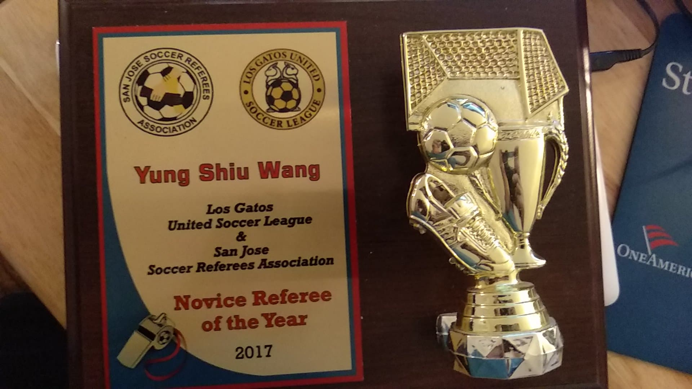

Yung-Shiu Wang
Hi, My name is Yung-Shiu Wang and I am a pre-business major at University of Riverside. I am currently 19 years old and in my freshman year of college. I am from the Bay Area and live in San Jose. I was born in Taipei, Taiwan and moved to the United States when I was six months old. The first place I moved to was Rhode Island and I lived there for around five years. My hobbies are sports like basketball and badminton, and I am into many types of video games. My work experience involved being a soccer referee for the Los Gatos United League, an IT intern at Valley Medical Center, and volunteered at a Chinese summer camp while playing the role of a captian.
In my role as a referee, I either played the role of an assistant referee or a center referee. As an assistant, my job was to help the center referee by being his/her eyes on the right or left side of the field. As a center referee, my responsibilities primarily revolves around safety and flow of the game while also helping out the assistant referees. In my first year, I was able to receive the novice referee of the year award due to my willingness to help out whenever needed and by living up to my responsibilities as a referee.
When I was an IT intern at Valley Medical, I worked as an assistant to IT employees, learned about the basic functions of a computer, and had experience with current generation technology. The internship was paid and six weeks long and I worked 30 hours a week from mondays to fridays. I gained a lot of knowledge from interning at Valley Medical Center and now consider myself to be up to date on technology that exists. I learned valuable knowledge from the workers at Valley Medical and I consider them to be my guiding point into the world of work. After finishing my internship, I was awarded with a recommendation letter to prove that I am capable in the field of IT.
My first work experience was when I volunteered as a teacher assistant at a Chinese summer camp during my summer after my sophomore year of high school. Every volunteer worked 45 hours a week from monday to friday. At the time, I played the role of a new start that mainly supported the superstars and captains. The main role of all the teacher's assistants is to cooperate as a team and help out both the teachers and campers to the best of our abilities. After my first year of volunteering, I was promoted to the role of captain. With my responsibilities higher than before, I took my year of experience from last summer and took it to another level. As a result of my hard work, I was rewarded with a scholarship award. Additionally, I was awarded with the President's volunteer award due working long hours each week. I worked for five weeks that summer and earned the silver medal for working 225 hours in total. I will never forget my experience volunteering at the Chinese school because it motivated me to work in other fields of work.
Experience
IT
• Worked as an assistant to IT employees.
• Learned about the basic functions of a computer
• Experience with current generation technology.
Soccer Referee
• Received a license to help ref soccer games.
• Awarded novice referee of the year
• Now able to ref high level games with kids near my age.
Badminton Club
• Three year member with experience at varsity level.
• Won two most improved player awards.
• Almost made league finals despite lack of experience
Education
UC Riverside
Portfolio
